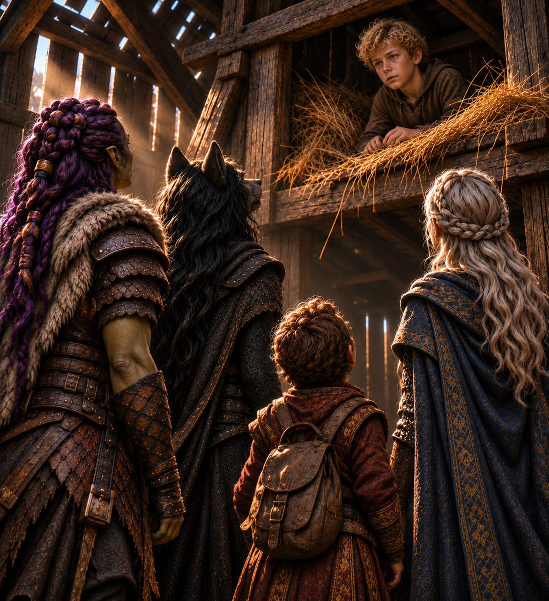

Through the Mists
When the Mists offer you a shortcut, you never know what “shortcut” means or who else will be traveling with you.

Ravenlost began the day deep beneath the mountains, resting inside Glim Brightstone's vault. The party had survived undead miners, discovered Glim's final recording, and collected what treasure they could carry.
There were just two problems.
The elevator was broken, and somewhere above them, giant spiders were waiting.
And, of course, they had promised a ghost they would find his body.
The climb out
After a long rest in the vault, Bia, Cadric, Jain, and Elisandra began making their way out of the abandoned silver mine.
The broken elevator left them facing a climb of approximately 65 feet. Fortunately, the rope was still in place.
Everyone managed to reach the upper level, although Cadric's preferred method of climbing involved sitting partially inside the bag of holding and letting Bia lift him up.
With the party reunited above the shaft, there was one final obligation before they could leave.
Klem.
A ghost, some spiders, and a terrible idea
Klem had spent more than 58 years trapped in the mine as a ghost. Ravenlost had promised to recover his remains, which were somewhere beyond the web-filled chamber. But he'd been afraid to return to his body for the last two years, ever since the giant spiders arrived.
Ravenlost needed to know more about these spiders. How many were there? How big were they? Where in the chamber were they located? Cadric tried to persuade Klem to investigate.
"Go in there and tell us where the spiders are, and come back and report," he urged.
"I won't be doing that," Klem protested.
Bia reminded him that the spiders couldn't hurt him: their attacks would pass through him, just as other objects had.
"You haven't seen them. They're really spooky," Klem replied.
Cadric eventually persuaded him, and Klem reluctantly agreed to try. The ghost drifted into the chamber while the party waited for news. Thick webs covered the room, stretching upward toward a ceiling some 30 to 40 feet high. An opening near the top suggested that creatures could enter or leave from above.
Klem spotted something moving among the webs. A spider the size of a horse dropped from the ceiling and lunged toward him. Its attack passed through the ghost, and the creature landed hard on the ground.
Klem returned to the party in a panic, confirming that at least one enormous spider was waiting inside.
Ravenlost considered its options. They had explosives. They had a minecart. They had a ranger and an orc who might be able to communicate with creatures. And they had Bia and Jain, who were willing to try almost anything once.
In the tunnel leading toward the chamber, Elisandra enchanted some stones with a Light cantrip. Bia threw them into the chamber, and the room lit up. The magical light revealed the full horror of the chamber. Thick webs coated nearly every surface, stretching from wall to wall and rising toward the high ceiling. The strands shimmered silver in the light, giving the entire cavern the appearance of a vast, glistening cocoon. Somewhere above, in the darkness beyond the light, enormous spiders waited.
Cadric snuck in to investigate. He saw a strange spider-like creature investigating one of the glowing stones Elisandra had thrown inside. It wasn't one of the enormous horse-sized spiders Klem had encountered. This creature was smaller, with four limbs and humanoid characteristics. "Nope. I'm out," he said, returning to the tunnel.
Jain slipped on her Necklace of Disguise, using its magic to take on the appearance of one of the spider-like humanoids. She then noticed three other creatures: two giant spiders and another spider-like humanoid.
Bia attempted to sneak into the chamber, but stealth was not her strongest skill. Unable to hide, she used Beast Sense in an attempt to communicate with a smaller spider-like creature. Unfortunately, the creature wasn't an animal. It responded with chittering, and no meaningful conversation followed.
With their focus turned to Bia, Jain tried an altogether different approach, putting on a seductive performance intended to distract the spider-like creatures. Whatever she hoped to accomplish, the creatures were unimpressed. Apparently, even Jain's considerable talents had their limits.
At this point, subtlety had largely ceased to be an option.
The battle in the webs
Jain attempted to shove one of the giant spiders backward into its own web. The maneuver nearly worked, but the spider caught a secure strand and pulled itself to safety. She also unleashed a howl that hindered several enemies.
Elisandra entered and saw three spider-like humanoids, one of whom was Jain in disguise, and two giant spiders. It took her a moment to determine which creature was Jain in disguise. Her exaggerated chest gave her away. She then struck the spiders with a fire-based Chromatic Orb, sending flames through the web-filled chamber.
The battle was dangerous, but Ravenlost eventually gained the advantage. The two giant spiders were killed. The remaining creatures suffered injuries and attempted to escape. Rather than pursue them deeper into the mine, the party allowed them to flee.
With the chamber finally quiet, Ravenlost could return to its original purpose.
Klem's last request
Elisandra's Chromatic Orb helped clear away many of the webs. At the back of the chamber, Ravenlost found the pile of rubble that had killed Klem. Bia told Cadric to let Klem know the chamber was safe, then she began moving the pile of heavy boulders.
Klem's body had been crushed so thoroughly that most of his bones had become dust. Only his legs remained recognizable. Nearby, the party discovered a silver dowsing rod. Klem explained that he'd been using it to search for valuable minerals. He had found mostly silver, along with some salt.
Ravenlost kept the rod because you never know when you'll need a dowsing rod.
The party scooped Klem's remains into a minecart and transported them out of the mine.
Outside, Klem approached what was left of his body.
“That should work.”
And "poof!" he vanished.
After more than half a century trapped underground, Klem was gone. Whether his spirit had finally found peace, Ravenlost couldn't know. But they kept their promise.
Into the Mists
With the mine behind them, Ravenlost turned toward Falkovnia. They still had a mission: find Mikhail Hatzimvas and try to learn more about Glim's whereabouts.
For Bia, the journey was also personal. News of an enormous undead invasion had reached her only recently. Her adoptive father, Tobin Underfoot, and her sister, Mira, were somewhere in the threatened land. On top of that, the name "Commander Korath" continued to trouble her.
It was time to enter the Mists again. The party tied themselves together, and Jain, as a Mistwalker, led the way.
Visibility quickly fell to approximately 20 feet. The air grew colder, and the landscape began changing around them. After about an hour, the temperature dropped roughly ten degrees. The party continued walking through the strange silence.
Hours passed. Eventually, the familiar forest gave way to a bleak landscape of wind-blasted grasses, scattered trees, and muted colors.
After approximately eight hours of travel, Jain spotted a ruined barn. It looked like a possible place to rest. But Ravenlost wasn't taking any chances. Elisandra cast Augury, asking whether staying the night inside the barn would be wise.
The answer was unfavorable.
Naturally, Ravenlost went inside anyway. It wasn't night yet, after all.
The boy in the barn
The barn was badly deteriorated, with a damaged roof and signs of long abandonment. Inside lay the body of a cow, dead for approximately six to eight weeks. Its remains bore bite marks.
Bia then noticed small cloven footprints on the ground, approximately the size of Cadric's feet.
Above them, something moved in the hayloft. Ravenlost looked up and saw a small head with blond curly hair.
"Are you lost, buddy?" Jain asked.
"Where are you from?" the boy asked as he emerged.
"And what's your name?" Jain asked.
"My name is Matteo. I'm from Aerie," the boy answered.
He was frightened, hungry, and alone. Ravenlost offered him food and water.
Matteo was eleven years old and came from a settlement in southern Falkovnia. He'd been hiding for the last nine days. He told them that his parents and seven-year-old twin sisters, Susie and Haley, had been separated from him while the family fled an undead attack and entered the Mists. He'd survived with limited food and water from a trough.
The party fed him, shared what supplies they could, and began asking what had happened.
A country overrun
Matteo described undead creatures unlike anything he had previously encountered. Zombies had appeared in overwhelming numbers. There were undead ogres, undead birds, and other horrors moving through the countryside.
His family had been attacked while trying to escape. He explained that survivors were being directed toward Lekar, where Commander Korath controlled the defenses. The city was protected by enormous walls and the Red Gate.
But Matteo's description of Korath was hardly reassuring. The commander ruled with an iron fist, and her Talons enforced strict discipline. Conscription into Falkovnia's military could begin as young as fourteen. Farmers, however, were exempt given the recent shortage of food.
Bia listened carefully. She had left Falkovnia only about six weeks earlier. Much of what Matteo described had happened after her departure.
Her family might still be alive. But she had no way of knowing where they were.
Ravenlost agreed to bring Matteo along and tied him to their rope. They weren't completely heartless.
A leap over the dead
The party continued through the Mists. After several more hours, they reached a ravine approximately 30 feet wide that stretched as far as they could see. From somewhere below came the sound of heavy footsteps.
Looking down, Ravenlost saw something enormous moving through the valley. It was a towering humanoid mass of compressed bodies, fused together into a single hulking shape. Individual bodies occasionally separated from it and fell into the valley below.
The party had no intention of confronting it. And they needed to cross the ravine. Fortunately, Ravenlost had a bag of holding, a spell, and an increasingly flexible interpretation of sensible transportation.
Elisandra, Cadric, and Matteo climbed into the bag of holding, each resting on a gunpowder barrel. Bia took responsibility for carrying that cargo.
Jain cast Jump on Bia, then she and Bia leaped in sync across the ravine, carrying their companions over the enormous undead horror below.
Everyone made it safely to the other side. Matteo recognized the creature as resembling something he had seen near his family's farm. That didn't sound great.
The party continued onward.
The wagon on the hill
Seven more hours passed as Ravenlost trudged through the oppressive Mists. Then, from somewhere beyond a hill to their left, came the unmistakable sounds of fighting.
A voice shouted, "Circle up and protect the wagon!"
A wagon.
Under ordinary circumstances, that single word would have been enough to send Ravenlost scrambling up the hillside. After all, wagons tended to contain things. Sometimes even valuable things. And if there was already a fight underway, perhaps someone else would do the hard work for them.
The party briefly considered investigating. There was even talk of scouting ahead. But they'd been traveling for nearly forty hours, were suffering from exhaustion, were still tied together by rope, and were now responsible for a child. Whatever was happening beyond the hill, joining another battle seemed like a particularly bad idea.
And so, in a remarkable display of restraint entirely unlike Ravenlost, they continued down the road. Without fighting anyone. Without investigating the wagon. And, most astonishingly, without collecting a single piece of loot.
The price of desertion
The journey stretched into yet another day. Ravenlost grew increasingly exhausted as the Mists refused to release them. Bia had been carrying Matteo, which allowed him to get some rest.
Eventually, the terrain became more familiar. A forest appeared, along with a cobblestone road. Along the road stood five figures. As the party approached, they realized the figures were bodies impaled on stakes. The corpses had been burned.
Matteo identified them as deserters from the Talons. Under Korath's rule, abandoning military service could carry a brutal punishment.
The discovery made the commander's promises of safety seem considerably less comforting.
Ravenlost continued walking. Then, after roughly 40 hours of travel through the Mists, the party finally emerged at sunrise.
Bia recognized the Stone Spine Mountains. They stood overlooking a basin.
In the distance, about an hour down the mountain, stood a watchtower.
The woman in the watchtower
The tower rose approximately 60 feet above the surrounding landscape. Ravenlost, exhausted, approached and called out.
No answer. They walked around the tower, but there was no entrance. What had once been a door with a peephole was now almost fully encased behind a brick wall.
Suddenly, a pebble landed on Jain. Looking up, they saw an elderly woman at the top of the tower. She motioned that she was coming down.
Through the peephole, she told Ravenlost that her name was Zlava. She had been imprisoned inside the tower as punishment for stealing bread. Her assigned duty was to watch for approaching undead hordes and light the tower's brazier to warn others. She had been trapped there for approximately a week and a half, with dwindling supplies. Her punishment was a death sentence, as she was not supposed to survive much longer. And she would be replaced by a new prisoner.
Ravenlost questioned her about the surrounding countryside and the invasion.
Zlava explained that the undead attacks had begun approximately six or seven weeks earlier. The hordes appeared to arrive at intervals of roughly two weeks. At first, a small horde appeared in the west and was quickly extinguished. One large force had traveled from the north to the south. About two weeks later, another had subsequently moved from south to north. Unfortunately for Ravenlost, that last horde arrived about a week ago, maybe more. Not-so-great timing for the team, as usual.
The hordes also appeared to be converging somewhere. They seemed to move with a purpose and would try to kill anything in their way. And rumors suggested that one horde numbered as many as ten thousand undead, although Zlava doubted the accuracy of that figure.
The Talons had suffered substantial losses attempting to stop the invaders. The aftermath of these attacks was devastating. Fires were used to destroy remains and prevent the dead from rising again.
For Bia, the timing was particularly disturbing. The invasion had begun around the time she left Falkovnia.
Something in the trees
Even though it was morning, the party decided to rest at the base of the tower. Jain took the first watch, followed by Cadric, Elisandra, and Bia.
Jain's watch was uneventful. Later, while Elisandra stood guard, she heard pebbles dropping near the tower. Looking upward, she saw Zlava motioning urgently for silence.
Elisandra communicated with her telepathically. Zlava had spotted movement near the tree line on the opposite side of the tower. There were multiple shapes moving through the darkness, including larger and smaller creatures.
Elisandra kicked a snoring Bia, and then the party continued sleeping and watching quietly.
Approximately 40 minutes later, Zlava reported that the movement had stopped and the area appeared clear. Whatever had been watching or passing through the woods was gone.
Bia and Matteo
During her watch, Bia spent time talking with Matteo. The boy was curious about the strange group that had rescued him, particularly Cadric. Bia defended Cadric.
"He's a great person," she told Matteo. "He's a little weird, but he's a great entertainer. He writes good songs. He's brave when he has to be, but he tries to choose not to be."
"He's just kind of a lot," Matteo replied.
"Yeah, his name is Cadric."
"Yeah, I'm just gonna call him 'a lot.'"
"Yeah, that's pretty accurate," Bia admitted.
Then Matteo asked why Ravenlost had come to Falkovnia at all.
"My family is here," Bia told him, deciding it best not to divulge the fact that they were working for a dreadlord.
Matteo suggested that if they had survived the invasion, they might have fled toward Lekar, where refugees were gathering behind the Red Gate. He described the enormous walls surrounding the city and the roads leading toward it.
Bia asked about the undead. They both recalled that Falkovnia had experienced occasional encounters with zombies or ghouls, but nothing approaching the scale of the current invasion.
People spoke of tens of thousands of undead marching with a single purpose. After the hordes passed, survivors burned everything they could to prevent the dead from returning.
Bia also asked whether Matteo had ever seen strange wisps flying away around midnight, just in case Godfroy's dominion reached all the way into Falkovnia. But Matteo had not seen anything like that.
The watch passed without further incident. For Bia, however, the conversation had provided both a possible destination and more reasons to worry.
Stronger, but not necessarily wiser
After a much-needed long rest, Ravenlost awoke feeling considerably better.
The party recovered from one level of exhaustion.
They had also reached a milestone.
Ravenlost was now level 5.
Bia gained increased proficiency, greater movement speed, additional hit points, and the ability to attack twice when taking the Attack action.
The party reviewed their new abilities and prepared to continue through Falkovnia. First, however, there was the matter of Zlava.
Freeing Zlava
The elderly woman remained trapped inside the watchtower. Ravenlost discussed the risks of releasing someone imprisoned by Falkovnian authorities. But leaving her there, with little food and only a few days of water remaining, was hardly an appealing alternative.
The party used rope to reach the upper part of the tower, then attached more rope around the other side.
Bia climbed up and helped free Zlava. The woman had already prepared a bag containing what belongings and supplies she could carry. More importantly, they were able to retrieve all of their rope, leaving no evidence of assisting with breaking out a prisoner. They had only just arrived in—or returned to—Falkovnia, and they didn't want to immediately make enemies with its commander.
Before leaving, Ravenlost asked whether she had any advice.
"Don't fight, run," Zlava answered. Then came a second warning:
"Don't trust the commander."
She also explained that the undead weren't especially fast, but they were unrelenting. Then, Zlava headed into the Mists, taking her chances away from the tower and the Talons.
Matteo remained with the party.
The road to Delmunster
Before departing, Ravenlost had also asked Zlava about nearby settlements. The closest was Delmunster, approximately twelve hours away, through the Forest of Strangers. Lekar and the main evacuation area were considerably farther away, roughly four or five days of travel.
Zlava said the forest had been relatively untouched when she last passed through, about a week earlier.
That was hardly a guarantee of safety. But Ravenlost needed to keep moving. With Matteo accompanying them, the party set out toward Delmunster.
Behind them lay a silver mine, a vanished ghost, and the horrors of the Mists. Ahead waited an occupied homeland, an uncertain refuge, and a commander whose name Bia had heard before.
Korath.
For the third time in her life, that name had surfaced in connection with terrible events. And now Bia was traveling toward territory under Korath's control.